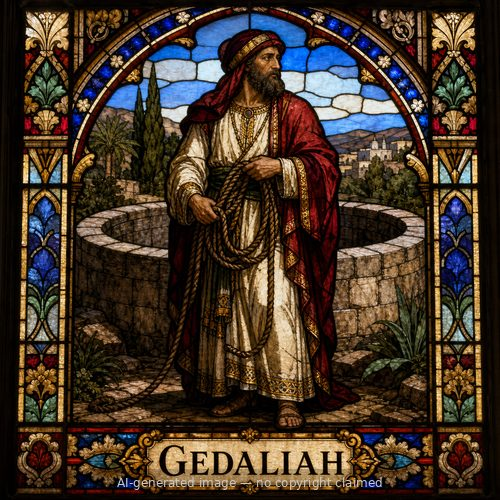

Gedaliah (M)
First named in 2 Kings 25:22-25
After Jerusalem's fall to Babylon in 586 BC, King Nebuchadnezzar appointed Gedaliah, son of Ahikam, as governor over the small remnant of Judeans left in the land, based at Mizpah rather than the ruined capital (2 Kings 25:22-23; Jeremiah 40:5-6). Jeremiah the prophet, released from captivity and given the choice to go to Babylon or remain, chose to stay with Gedaliah's community (40:1-6). Gedaliah urged the surviving Judean military leaders and people to submit peacefully to Babylonian rule, settle in the towns, and gather the harvest, promising it would go well for them (40:9-10). Word soon came that Ishmael, a man of royal Davidic blood acting on behalf of the king of Ammon, intended to assassinate him, but Gedaliah refused to believe the warning or take precautions, even rejecting an offer to have the threat eliminated quietly (40:13-16). Within about two months of his appointment, Ishmael and ten men came to Gedaliah at Mizpah, were received as guests at a meal, and then murdered him along with the Judean and Babylonian soldiers stationed with him (41:1-3). The remaining Judeans, terrified of Babylonian reprisal for the governor's murder, fled to Egypt against Jeremiah's direct warning not to go, taking the reluctant prophet with them (41:16-18; 43:1-7). Gedaliah's brief governorship, and its violent end, is still commemorated in Jewish tradition by a fast day.
Thought for Today
Gedaliah’s story teaches us about leadership amid ruin; may we look to Jesus, whose grace and truth never fail.
References: 2 Kings 25:22-25; Jeremiah 39:14; Jeremiah 40:5-16; Jeremiah 41:1-18; Jeremiah 43:6
Genealogy
Connections
Places
- Mizpah — Babylon's appointed governor, based and assassinated at this town
Jeremiah 40:6-7; Jeremiah 41:1-3
Other people named Gedaliah
